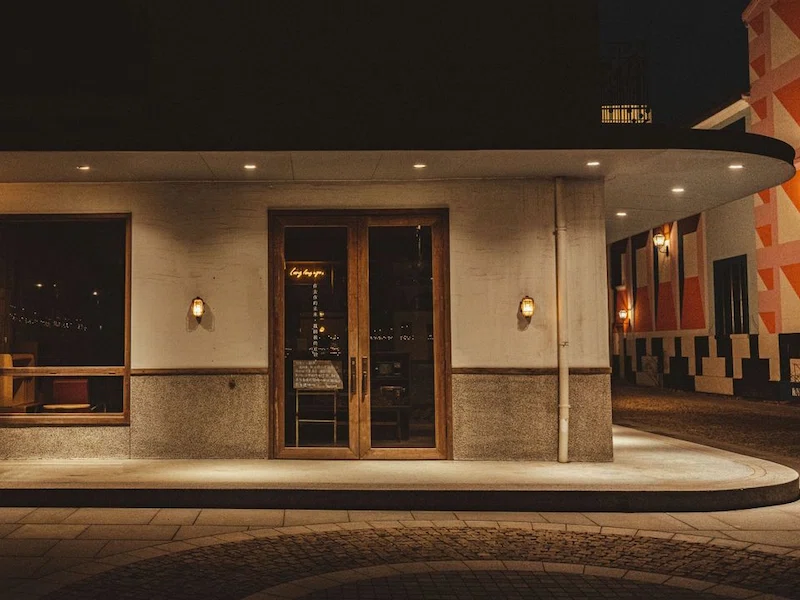
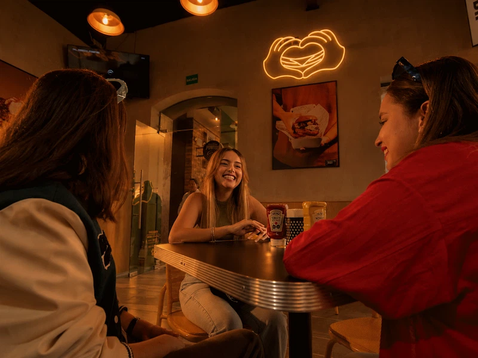
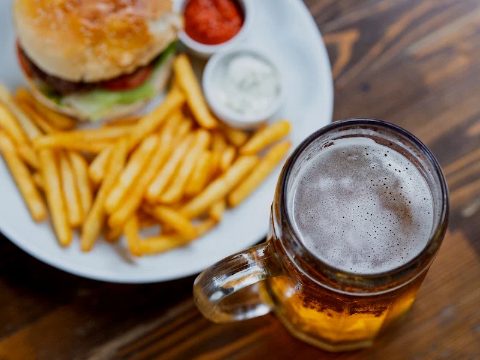

Hours & Location
Opening hours
| Monday – Thursday | 11:00 – 22:00 |
|---|---|
| Friday | 11:00 – 23:00 |
| Saturday | 12:00 – 23:00 |
| Sunday | 12:00 – 21:00 |
Find us
Götgatan 42118 26 Stockholm
+46 8 000 00 00
hello@bunintended.example
Getting here
- T-bana Medborgarplatsen, 5 minute walk
- Bus 3 and 4
Map
Come on in


